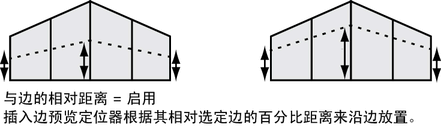
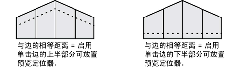
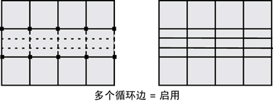
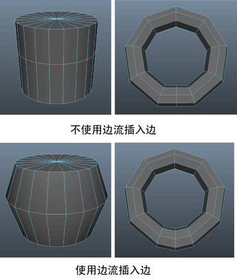

在“建模”(Modeling)菜单集中，选择“网格工具 > 插入循环边”(Mesh Tools > Insert Edge Loop) >  可打开这些选项。有关插入循环边的详细信息，请参见插入循环边。
可打开这些选项。有关插入循环边的详细信息，请参见插入循环边。
- 保持位置(Maintain position)
- “保持位置”(Maintain position)选项指定如何在多边形网格上插入新边。
- 与边的相对距离(Relative distance from edge)
-
“保持位置”(Maintain position)设置为“与边的相对距离”(Relative distance from edge)（默认）时，会基于选定边上的百分比距离，沿着选定边放置点插入边预览定位器。例如，如果单击选定边并将其拖动到沿选定边约一半距离的位置，则线预览定位器将大概显示在其他所有沿选定环形边的所有其他条边的中间位置。
 - 与边的相等距离(Equal distance from edge)
-
“保持位置”(Maintain position)设置为“与边的相等距离”(Equal distance from edge)时，将沿着选定边按照基于单击第一条边的位置的绝对距离放置点插入边预览定位器。如果各个边的长度差异很大，则该工具会使用最短的边来确定预览定位器可以移动的最大距离。如果希望在从现有边的特定距离处插入新边，则可以使用该选项。例如，在要控制可能要在网格上执行的任何后续边折痕的情况下。
注： 预览定位器可以移动的距离受相关环形边上最短边的长度限制。如果定位器快速捕捉到任一条边，则可能表示它是环形边中较短的边，即限制放置的边。 - 多个循环边(Multiple edge loops)
-
根据“循环数”(Number of loops)设置中指定的数量，沿选定边插入多个等距循环边。无法手动重新定位多个循环边。启用“多个循环边”(Multiple edge loops)时，保持位置设置不可用。
注： 选择“多个循环边”(Multiple edge loops)选项时，附加属性将在“polySplitRing 节点”(polySplitRing node)上变得可用，用来修改循环边的 3D 轮廓。有关详细信息，请参见下文的“修改循环边的 3D 轮廓”部分。
- 使用相等倍增(Use Equal Multiplier)
-
请参见下文的“修改循环边的 3D 轮廓”部分。
- 循环数(Number of loops)
-
启用“多个循环边”设置时指定要创建的循环边数量。默认设置为 2。“循环数”(Number of loops)设置为 1 时，将在边之间的中间点位置插入单个循环边。
- 自动完成(Auto complete)
-
启用“自动完成”(Auto complete)（默认）时，只要单击并拖动到相应的位置，然后释放鼠标按钮，就会在整个环形边上立即插入新边。禁用“自动完成”(Auto complete)时，在按 Enter 键或右键单击并从标记菜单中选择“完成工具”(Complete Tool)之前，插入边预览线将一直保留。想要在部分环形边或多方向环形边路径上插入边时，禁用“自动完成”(Auto complete)非常有用。
注： 禁用“自动完成”(Auto complete)选项时，可以双击以选择整个多边形网格的整个环形边（类似于使用“选择环形边工具”(Select Edge Ring Tool)时的情况），然后放置插入边预览定位器。否则，在启用“自动完成”(Auto Complete)的情况下双击某条边，会立即在某个不理想的位置插入该边。 - 固定的四边形(Fix Quads)
-
启用“固定的四边形”(Fix Quads)时，会自动分割由插入循环边生成的三边形和五边形区域，以生成四边形区域。当保持网格的四边形完整性非常重要时，该设置非常有用。默认设置为“禁用”。
- 使用边流插入(Insert with edge flow)
-
可以插入遵循周围网格曲率的循环边。默认情况下此选项已禁用，但可以在标记菜单（同时按住 Ctrl + Shift 键并单击鼠标右键）中切换“边流”(Edge Flow)。
注： 此功能不支持多个循环边。启用“多个循环边”(Multiple edge loops)时，将自动禁用“使用边流插入”(Insert with edge flow)。 - 调整边流(Adjust Edge Flow)
-
在插入边之前，输入值或调整滑块以更改边的形状。
将“调整边流”(Adjust Edge Flow)设置为 1 可变换边的曲面曲率以遵循周围网格的曲率。设置为 0 时，这些边将移动到附近其他边的中间，从而形成平面。

- 平滑角度(Smoothing angle)
-
指定操作完成后，是否自动软化或硬化沿环形边插入的边。“平滑角度”(Smoothing angle)设置为 180（默认）时，插入的边将显示为软边。“平滑角度”(Smoothing angle)设置为小于 180 的值后，插入的边将显示为硬边。
修改循环边的 3D 轮廓
选择“多个循环边”(Multiple edge loops)时，附加属性将在 polySplitRing 节点上变得可用，用来修改插入循环边的轮廓。这使得您可以创建沿插入循环边在多边形网格上突出或凹进的特征。
若要修改插入循环边的横截面轮廓外形，需要选择 polySplitRing 节点并启用“启用剖面曲线”(Enable Profile Curve)。附加属性如下所述：
分割环属性
- 分段(Divisions)
-
启用“多个循环边”设置时指定要创建的循环边数量。默认设置为 2。“分段”(Divisions)设置为 1 时，将在边之间的中间点位置插入单个循环边。该属性与位于“插入循环边工具”(Insert Edge Loop tool)设置窗口内的“循环数”(Number of loops)属性相同。
- 启用剖面曲线(Enable profile curve)
-
启用剖面曲线属性。
- 使用相等倍增(Use Equal Multiplier)
-
与剖面曲线的高度和形状相关。禁用“使用相等倍增”(Use Equal Multiplier)且“选定值”(Selected Value)为 1时，将在与被分割边长度相等的距离处设置对应的顶点偏移。启用“使用相等倍增”(Use Equal Multiplier)时，应用最短边的长度来确定偏移高度。
- 在末端使用面法线(Use Face Normals At Ends)
-
指定插入循环边轮廓的起点和终点根据面法线（而非边法线）方向在一个方向上突出或凹进。否则，循环边轮廓的起点和终点以锥形方式展开或收缩。在网格上插入部分循环边时，该设置非常有用。
剖面曲线选项(Profile Curve Options)
下列属性控制图表的外观，而图表会影响插入循环边的剖面形状。
- 选定位置(Selected Position)
-
指定当前选定图表控制柄的水平位置。“选定位置”(Selected Position)设置范围介于 0 和 1 之间。
- 选定值(Selected Value)
-
指定当前选定图表控制柄的垂直位置。“选定值”(Selected Value)设置范围介于 0 和 1 之间。
使用默认的“剖面曲线”(Profile Curve)设置且“选定值”(Selected Value)为 1 时，将在与选定边长度相等距离处设置对应的顶点偏移。
- 插值(Interpolation)
- 控制剖面曲线通过位置标记时的外观。更具体地说，即它离开一个位置标记而进入下一个位置标记时。
- 无(None)
-
在位置标记值之间没有插值。
- 线性(Linear)
-
剖面曲线退出选定位置标记，并在没有平滑的情况下进入下一个位置标记。
- 平滑(Smooth)
-
使用钟形曲线，通过位置标记对剖面曲线进行插值，然后将曲线融合到下一个位置标记。
- 样条线(Spline)
-
使用邻近位置标记的切线值，通过带有样条曲线的位置标记对剖面曲线进行插值，以产生平滑的过渡。
- 输入比例(Input Scale)
-
影响剖面曲线垂直范围的倍增值。默认设置为 1。如果将“输入比例”(Input Scale)设置为 1 以外的任意值，则剖面曲线的高度会按下列公式受到影响：
选定边长度 X 选定值 X 输入比例 + 偏移
- 输入偏移(Input Offset)
-
指定剖面曲线的基准偏移值。默认设置为 0（无偏移）。设置偏移时既可以使用正值，也可以使用负值。仅通过“剖面曲线”(Profile Curve)默认设置并不能轻松地创建凹进剖面，因此在这些情况下，“输入偏移”(Input Offset)非常有用。